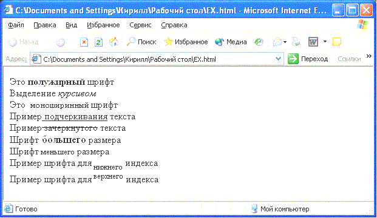

1.2.2 Логическое и физическое форматирование.
Примеры тегов логического форматирования
- <code>
- Выделяет текст как фрагмент программного кода:
//Пример простейшего оператора языка программирования С:
<code>puts("Hello, World!")</code>
-
- <del>
- Отмечает текст как удаленный:
Последней принятой спецификацией языка разметки HTML является версия <del datetime=1999-10-29t16:12:53+0.00>4.01</del> 5.0
Последней принятой спецификацией языка разметки HTML является версия 4.01 5.0-
- <ins>
- Отмечает текст как вставку (отображается подчеркнутым текстом):
<ins datetime=1999-10-29t16:12:53+0.00>3.2</ins>5.0-
- <em>
- Используется для выделения важных фрагментов текста:
Пример выделения отдельных слов текста.
- <acronym>
- Используется для отметки аббревиатур (не рекомендуется):
<acronym title= "Харьковский национальный университет радиоэлектроники"> ХНУРЭ</acronym> - один из ведущих технических вузов Украины.

Примеры тегов физического форматирования
Это <b> полужирный</b> шрифт
Выделение <i>курсивом</i>
Это <tt>моноширинный</tt> шрифт
Пример <u>подчеркивания</u> текста. Осуждается спецификацией HTML.
Пример <strike>зачеркнутого</strike> текста. Теги <strike> и <s> осуждаются спецификацией HTML, вместо них рекомендуется использовать стили.
Шрифт <big>большего</big> размера.
Шрифт <small>меньшего</small> размера
Пример шрифта для<sub>нижнего</sub> индекса
Пример шрифта для <sup>верхнего</sup>индекса.

Вернуться на главную страницу